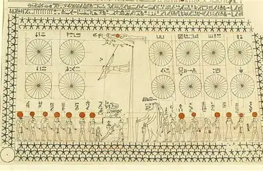

.jpg)
KV-Diagramm

Im Mathematikunterricht haben wir uns in den letzten Wochen intensiv mit dem Thema KV-Diagramme
beschäftigt. KV-Diagramme, auch Karnaugh-Veitch-Diagramme genannt, helfen dabei, logische
Schaltungen zu vereinfachen und die booleschen Ausdrücke effizient darzustellen. Für viele von uns
war das Thema neu und teilweise herausfordernd, weil es einer genauen Strukturierung und
sorgfältigen Analyse bedarf. Im Unterricht wurden uns zuerst die theoretischen Grundlagen erklärt,
bevor wir praktische Übungen lösten. Wir haben gelernt, wie man die Diagramme richtig aufbaut, wie
man Einsen gruppiert und wie sich dadurch logische Ausdrücke vereinfachen lassen. Ziel war es, ein
Verständnis für die Vereinfachung von digitalen Schaltungen zu entwickeln und sicher mit den
Diagrammen umgehen zu können. Dieser Fachbericht beschreibt die wichtigsten Aspekte der KV-Diagramme
und wie wir sie im Unterricht angewendet haben.
KV-Diagramme
KV-Diagramme sind zweidimensionale Tabellen, in denen die Kombinationen der Eingangsvariablen übersichtlich dargestellt werden. Jede Zelle zeigt den Wert der Funktion für eine bestimmte Kombination. Durch das Gruppieren von benachbarten Einsen lassen sich logische Ausdrücke vereinfachen. Dies hilft, digitale Schaltungen effizienter zu gestalten, da weniger logische Gatter benötigt werden. Im Unterricht haben wir zuerst einfache Diagramme mit zwei oder drei Variablen geübt und danach komplexere Fälle mit vier Variablen. Dabei war es wichtig, systematisch vorzugehen und keine Einsen zu vergessen oder doppelt zu zählen. Wir haben auch gelernt, wie man Don't-Care-Bedingungen verwendet, um die Vereinfachung weiter zu optimieren. Praktische Übungen halfen uns, Fehler zu erkennen und die Methodik zu verinnerlichen. Durch diese Arbeit wird das Verständnis für digitale Logik vertieft und wir können später komplexe Schaltungen leichter analysieren.
Fazit
Das Arbeiten mit KV-Diagrammen ist anfangs anspruchsvoll, aber sehr hilfreich. Im Mathematikunterricht habe ich verstanden, wie man logische Ausdrücke systematisch vereinfacht und digitale Schaltungen effizient plant. Die Übungen haben mir Sicherheit gegeben und das Thema verständlicher gemacht.
Weekly random Facts
Die Bedeutung von Bienen für die Umwelt
Bienen sind wichtige Insekten, die eine entscheidende Rolle für das Ökosystem und die Landwirtschaft spielen. Sie sind vor allem für die Bestäubung von Pflanzen verantwortlich. Ohne Bienen würden viele Obst- und Gemüsesorten deutlich weniger Erträge liefern, da die Pflanzen ihre Samen nicht effektiv verbreiten könnten. In den letzten Jahren ist die Anzahl der Bienen weltweit stark zurückgegangen, was durch Pestizide, Monokulturen und den Verlust von Lebensräumen verursacht wird. Dieser Rückgang ist besorgniserregend, weil er die Nahrungsketten und die Biodiversität direkt beeinflusst. Im Unterricht oder in Projekten lernen wir, wie wichtig es ist, die Umwelt zu schützen und die Bienenpopulation zu erhalten. Auch im Alltag kann jeder etwas beitragen, zum Beispiel durch das Anpflanzen von bienenfreundlichen Blumen oder durch den Verzicht auf schädliche Pestizide im Garten.
Neben der Bestäubung sind Bienen auch Produzenten von Honig, Wachs und Propolis, die in vielen Bereichen genutzt werden. Honig ist nicht nur ein Lebensmittel, sondern auch ein Bestandteil in der Naturheilkunde. Wachs wird für Kerzen oder kosmetische Produkte verwendet, und Propolis hat antibakterielle Eigenschaften. Bienenstöcke bieten zudem einen Einblick in das komplexe soziale Leben dieser Insekten. Jede Biene hat eine Aufgabe, sei es als Arbeiterin, Drohne oder Königin, und zusammen funktionieren sie wie eine perfekt organisierte Gemeinschaft. Dieses Zusammenarbeiten und die Präzision im Bienenvolk sind beeindruckend und können als Vorbild für Teamarbeit und Organisation betrachtet werden.
Insgesamt zeigt sich, dass Bienen weit mehr als nur Insekten sind, die Honig produzieren. Sie sind essenziell für die Natur, die Landwirtschaft und das menschliche Leben. Der Schutz von Bienen ist daher nicht nur eine ökologische, sondern auch eine gesellschaftliche Aufgabe. Durch Aufklärung, bewusste Handlungen und Projekte können wir alle dazu beitragen, die Bienenpopulation zu stärken und die Natur nachhaltig zu unterstützen. Wer sich mit Bienen beschäftigt, lernt gleichzeitig Verantwortung für die Umwelt zu übernehmen und die Bedeutung von Biodiversität besser zu verstehen.
Zusammenfassend ist Bridgerton mehr als nur eine Liebesgeschichte. Die Serie verbindet Unterhaltung mit historischen und gesellschaftlichen Themen und hebt sich durch ihren besonderen Stil von klassischen Historienfilmen ab. Dadurch bleibt sie spannend und relevant für ein modernes Publikum.